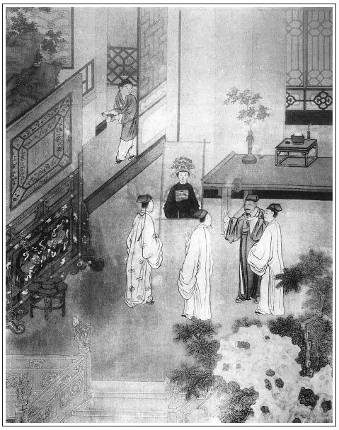

張回這篇文字，特特為丑西門無恥與一班無恥逐臭者，然卻又是一篇一氣承上起下的文字。
傳真、觀戲，特特相對，蓋為一百回地也。夫人死而日真，假中之真。何以謂之真，乃必傳之？瓶兒之生，何莫非戲？乃於戲中動悲，其癡情纏綿，即至再世，猶必沉淪海。故必幻化，方可了此一段淫邪公案也。
寫月娘叫敬濟來家吃飯，雖閒閒一語，卻寫盡敬濟在西門家，無人防微杜漸，日深其奸，與眾婦女熟滑，而雖有金蓮之私，無一人疑而指之也。看文當於閒處，信然，信然！
篇內幾段文字：自首至吃飯收傢伙，是一段上回餘文也。來保請畫師來，至小童拿插屏出門，是一段正文。喬大戶看木頭，至閤家大小哭了一場，是一段小殮文字。自來興買冥衣等件，至打銀爵，是設靈一段。自與伯爵定喪禮，至各遵守去訖，是派人一段。自皇莊內相送竹木，至七間榜棚，是搭棚一段。請報恩寺僧是唸經，每日兩個茶酒是開喪，自為兩小段。自花大舅去，至春鴻兩個服侍，是下半日一段。自天明梳洗，至第二日清晨，為一段。夏提刑來是一段。吳銀兒是一段。到三日唸經一段。弔孝一段。大殮一段。題主一段。眾人上紙一段。插入桂姐，首七和尚唸經一段。插入吳道官送影來一段。年間眾人上祭一段。過入觀戲之脈，胡府尹上祭一段。鄭月兒一段。晚夕眾人伴宿，正說觀戲至末是一段。雖插三妓，然總是一段文字也。試看他於瓶兒一七曲曲寫來，無事不備，無人不來，總為西門一死，詳略之間，特特作照。此回猶是第一熱鬧文字，不是冷局也。
觀戲寫春梅出色，寫西門是正意，寫金蓮是暢意。寫春梅蓋為玉簫模神，非如別回寫春梅；寫金蓮蓋為如意露線，非如別回寫金蓮也。
戲中乃因寄丹青而悲，然則一線穿卻，言其真如戲也。
必用《玉簫女兩世姻緣記》，胡言玉簫之所以有此人，特為春梅而設也。何則？開捲出春梅，則以玉簫為大丫頭而出之。至前出春梅，必雲一玉簫，一春梅。後文護短撒潑，必雲玉簫過舌。然則吹放江梅者，玉簫也。吹散江梅者，亦玉簫也。至於書僮，瓶兒生子始來，瓶兒一死即去，始終乎瓶兒者，非書僮之始終乎瓶兒，乃玉簫合書僮而始終乎瓶兒也。蓋言簫與書合，為蕭疏之風。瓶墜簪折，花事零落，東風恩怨，總不分明。故此回寫西門悲，而下回即云『私掛一帆風』。
篇內寫花子由夫妻重孝，直是沒理到極處，卻是遙照武松。至於子由叫姐夫，更奇。
先寫銀兒，再寫桂兒，再寫月兒，此處將三人一總。
瓶兒，妾也。一路寫其奢僭之法，全無月娘，寫盡市井無禮之態。
玉簫、小玉，皆月娘婢也。而月娘皆不能防閒，令其有私。月娘之為人可知，作者之罪月娘亦可知。
上祭者，吳大舅、劉學官、花千戶、段親家，相連成文，言如此行喪禮，目無月娘也，留與人學說談論也，花費了西門慶也，斷絕了以前所攀之親家也。閒筆成趣。《玉簫記》，卻用小玉推玉蕭，一筆作兩筆用，總罪月娘也。
看戲既寫眾男客，又寫眾女客，總為西門死作襯。總是熱鬧，不是冷淡，又與生子後上墳文中遙對。
詩曰：
香杳美人違，遙遙有所思。
幽明千里隔，風月兩邊時。
相對春那劇，相望景偏遲。
當由分別久，夢來還自疑。

話說西門慶被應伯爵勸解了一回，拭淚令小廝後邊看飯去了。不一時，吳大舅、吳二舅都到了。靈前行禮畢，與西門慶作揖，道及煩惱之意。請至廂房中，與眾人同坐。
玳安走至後邊，向月娘說：「如何？我說娘每不信，怎的應二爹來了，一席話說的爹就吃飯了。」金蓮道：張夾玳安自與月娘說，卻用金蓮答，妙。「你這賊，積年久慣的囚根子，鎮日在外邊替他做牽頭，有個拿不住他性兒的！」玳安道：「從小兒答應主子，不知心腹？」月娘問道：「那幾個陪他吃飯？」玳安道：「大舅、二舅才來，和溫師父，連應二爹、謝爹、韓夥計、姐夫，共爹八個人哩。」月娘道：「請你姐夫來後邊吃罷了，張夾月娘處處揖盜入室。也擠在上頭！」玳安道：「姐夫坐下了。」張夾一語寫盡近日敬濟。月娘吩咐：「你和小廝往廚房裡拿飯去。你另拿甌兒粥與他吃，怕清早晨不吃飯。」玳安道：「再有誰？止我在家，都使出報喪、買東西，王經，又使他往張親家爹那裡借雲板去了。」月娘道：「書僮那奴才和你拿去是的，怕打了他紗帽展翅兒！」玳安道：「書僮和畫童兩個在靈前，一個打磐，一個伺候焚香燒紙哩。春鴻，爹又使他跟賁四換絹去了──嫌絹不好，要換六錢一疋的破孝。」月娘道：「論起來，五錢的也罷，又巴巴兒換去！」張夾已為書僮一路作地。又道：「你叫下畫童兒那小奴才，和他快拿去，只顧還挨甚麼！」玳安於是和畫童兩個，大盤大碗拿到前邊，安放八仙桌席。眾人正吃著飯，只見平安拿進手本來稟：「夏老爹差寫字的，送了三班軍衛來這裡答應。」西門慶看了，吩咐：「討三錢銀子賞他。寫期服生帖兒回你夏老爹：多謝了！」一面吃畢飯，收了傢伙。只見來保請的畫師韓先生來到。西門慶與他行畢禮，說道：「煩先生揭白傳個神子兒。」那韓先生道：「小人理會得。」吳大舅道：「動手遲了些，只怕面容改了。」韓先生道：「也不妨，就是揭白也傳得。」正喫茶畢，忽見平安來報：「門外花大舅來了。」西門慶陪花子由靈前哭涕了一回，見畢禮數，與眾人一處，因問：「甚麼時侯？」西門慶道：「正丑時斷氣。臨死還伶伶俐俐說話兒，剛睡下，丫頭起來瞧，就沒了氣兒。」因見韓先生旁邊小童拿著屏插，袖中取出描筆顏色來，花子由道：「姐夫如今要傳個神子？」西門慶道：「我心裡疼他，少不得留個影像兒，早晚看著，題念他題念兒。」一面吩咐後邊堂客躲開，掀起帳子，領韓先生和花大舅眾人到跟前。這韓先生揭起千秋幡，打一觀看，見李瓶兒勒著鴉青手帕，雖故久病，其顏色如生，姿容不改，黃懨懨的，嘴唇兒紅潤可愛。那西門慶由不的掩淚而哭。來保與琴童在旁捧著屏插、顏色。韓先生一見就知道了。眾人圍著他求畫，應伯爵便道：「先生，此是病容，平昔好時，還生的面容飽滿，姿容秀麗。」繡眉湊趣話，俱被伯爵說去。張夾幫閒技倆，卑在此等處。韓先生道：「不須尊長吩咐，小人知道。敢問老爹：此位老夫人，前者五月初一日曾在岳廟裡燒香，親見一面，可是否？」繡眉觀此，則畫工出門，人人皆當留心。張夾補寫燒香，總為畫師作地耳。西門慶道：「正是。那時還好哩。先生，你用心想著，傳畫一軸大影、一軸半身，靈前供養，我送先生一疋緞子、十兩銀子。」韓先生道：「老爹吩咐，小人無不用心。」須臾，描染出個半身來，端的玉貌幽花秀麗，肌膚嫩玉生香。拿與眾人瞧，就是一幅美人圖兒。西門慶看了，吩咐玳安：「拿與你娘每瞧瞧去，看好不好。有那些兒不是，說來好改。」
玳安拿到後邊，向月娘道：「爹說叫娘每瞧瞧，六娘這影畫得如何，那些兒不像，說出去教韓先生好改。」月娘道：「成精鼓搗，人也不知死到那裡去了，又描起影來了。」張夾自是月娘口角。潘金蓮接說道：「那個是他的兒女？畫下影，傳下神，好替他磕頭禮拜！到明日六個老婆死了，畫六個影才好。」張夾自是金蓮口角。孟玉樓和李嬌兒接過來觀看，說道：「大娘，你來看，李大姐這影，倒像好時模樣，打扮的鮮鮮的，只是嘴唇略扁了些。」月娘看了道：「這左邊額頭略低了些，他的眉角還彎些。虧這漢子，揭白怎的畫來！」玳安道：「他在廟上曾見過六娘一面，剛才想著，就畫到這等模樣。」
少頃，只見王經進來說道：「娘每看了，就教拿出去。喬親家爹來了，等喬親家爹瞧哩。」玳安走到前邊，向韓先生道：「裡邊說來，嘴唇略扁了些，左額角稍低些，眉還要略放彎些兒。」韓先生道：「這個不打緊。」隨即取描筆改過了，呈與喬大戶瞧。喬大戶道：「親家母這幅尊像，真畫得好，只少了口氣兒。」張夾畫美人者，雲只少口氣，是要活起來。此雲少氣兒是已死轉去。西門慶滿心歡喜，一面遞了三鍾酒與韓先生，管待了酒飯，又教取出一疋尺頭、十兩白金與韓先生，教他：「先攢造出半身來，就要掛，大影，不誤出殯就是了。俱要用大青大綠，冠袍齊整，綾裱牙軸。」韓先生道：「不必吩咐，小人知道。」領了銀子，教小童拿著插屏，拜辭出門。喬大戶與眾人又看了一回做成的棺木，便道：「親家母今已小殮罷了？」西門慶道：「如今仵作行人來就小殮。大殮還等到三日。」喬大戶吃畢茶，就告辭去了。
不一時，仵作行人來伺候，紙札打卷，鋪下衣衾，西門慶要親與他開光明，強著陳敬濟做孝子，繡旁寫出依人之苦。繡眉若金蓮死，敬濟亦甘心矣。張旁活晦氣。張夾此書無所不用其假，期待孝子亦假。與他抿了目，西門慶旋尋出一顆胡珠，安放在他口裡。登時小殮停當，照前停放端正，閤家大小哭了一場。張夾為上文無數哭一總，卻是兩番大哭。來興又早冥衣鋪裡，做了四座堆金瀝粉捧盆巾盥櫛毛女兒，一邊兩座擺下。靈前的彝爐商瓶、燭台香盒，教錫匠打造停當，擺在桌上，耀日爭輝。又兌了十兩銀子，教銀匠打了三副銀爵盞。張夾西門家豈無銀爵，此處現打，總致珍重之意。又與應伯爵定管喪禮簿籍：先兌了五百兩銀子、一百弔錢來，委付與韓夥計管帳；張夾一人管帳，一人一事。賁四與來興兒管買辦，張夾二人買辦。兼管外廚房；張夾二人兼事。應伯爵、謝希大、溫秀才、甘夥計輪番陪待弔客；張夾四執客。崔本專管付孝帳；張夾孝帳一人一事。來保管外庫房；張夾外庫房一人一事。王經管酒房；張夾酒一人一事，道國、王經二役獨佳，由六兒人情在內。春鴻與畫童專管靈前伺候；張夾靈前二人一事。平安與四名排軍，單管人來打雲板、捧香紙；張夾亦算靈前雜事五人一行事。又叫一個寫字帶領四名排軍，在大門首記門簿，張夾門簿五人一事。值唸經日期，打傘挑幡幢。張夾亦算門前兼管雜事。都派委已定，寫了告示，貼在影壁上，各遵守去訖。張夾細。只見皇莊上薛內相差人送了六十根杉條、三十條毛竹、三百領蘆席、一百條麻繩，張夾是熱鬧非冷事。西門慶賞了來人五錢銀子，拿期服生回帖兒打發去了。吩咐搭采匠把棚起脊搭大些，留兩個門走，張夾喪棚。把影壁夾在中間，前廚房內還搭三間罩棚，張夾罩棚。大門首扎七間榜棚，張夾榜棚。請報恩寺十二眾僧人先念倒頭經，每日兩個茶酒伺候茶水。張夾王經所管者酒房耳，此方是茶酒正司，點得錯落之甚。
花大舅、吳二舅坐了一回，起身去了。西門慶交溫秀才寫孝帖兒，要刊去，令寫「荊婦奄逝」，溫秀才悄悄拿與應伯爵看，伯爵道：「這個禮上說不通。見有如今吳家嫂子在正室，如何使得？繡旁大有主意。這一出去，不被人議論！就是吳大哥，心內也不自在。張夾伯爵一爭為吳大舅。等我慢慢再與他講，你且休要寫著。」陪坐至晚，各散歸家去了。張夾已死一日矣。西門慶晚夕也不進後邊去，就在李瓶兒靈旁裝一張涼床，拿圍屏圍著，獨自宿歇，止春鴻、書僮兒近前伏侍。天明便往月娘房裡梳洗，張夾天明便起。穿戴了白唐巾孝冠孝衣、白絨襪、白履鞋，絰帶隨身。張夾豈侍妾之服！
第二日清晨，張夾然則西門梳洗尚是頭一日夜間也，有心事人如畫。夏提刑就來探喪弔問，慰其節哀。西門慶還禮畢，溫秀才相陪，待茶而去。到門首，吩咐寫字的：「好生答應，張夾是武官行徑。查有不到的排軍，呈來衙門內懲治。」說畢，騎馬去了。張夾與西門死，何千戶一對，卻是此熱彼冷。西門慶令溫秀才發帖兒，差人請各親眷，三日誦經，早來吃齋。後晌，鋪排來收拾道場，懸掛佛像，不必細說。
那日，吳銀兒打聽得知，坐轎子來靈前哭泣上紙。到後邊，月娘相接。吳銀兒與月娘磕頭，哭道：「六娘沒了，我通一字不知，就沒個人兒和我說聲兒。可憐，傷感人也！」孟玉樓道：「你是他乾女兒，他不好了這些時，你就不來看他看兒？」吳銀兒道：「好三娘，我但知道，有個不來看的？說句假就死了！委實不知道。」月娘道：「你不來看你娘，他倒還掛牽著你，留下件東西兒，與你做一念兒，我替你收著哩。」因令小玉：「你取出來與銀姐看。」小玉走到裡面，取出包袱，打開是一套緞子衣服、兩根金頭簪兒、一枝金花。張夾銀瓶終始，煞強如月桂。把吳銀兒哭的淚如雨點相似，繡眉銀兒此時又慚又感，安得不哭？張夾方哭，妙甚。說道：「我早知他老人家不好，也來伏侍兩日兒。」張夾娘死而女不知，方是干女。說畢，一面拜謝了月娘。月娘待茶與他吃，留他過了三日去。
到三日，張夾又是三日。和尚打起磐子，道場誦經，挑出紙錢去。閤家大小都披麻帶孝。張夾奇。陳敬濟穿重孝絰巾，張夾奇。佛前拜禮，街坊鄰舍、親朋長官都來弔問，上紙祭奠者，不論其數。張旁一總。陰陽徐先生早來伺候大殮。祭告已畢，抬屍入棺，西門慶交吳月娘又尋出他四套上色衣服來，裝在棺內，四角又安放了四錠小銀子兒。花子由說：「姐夫，倒不消安他在裡面，金銀日久定要出世，倒非久遠之計。」西門慶不肯，定要安放。不一時，放下了七星板，擱上紫蓋，仵作四面用長命釘一齊釘起來，一家大小放聲號哭。西門慶亦哭的呆了，張夾三番大哭。口口聲聲只叫：「我的年小的姐姐，再不得見你了！」良久哭畢，張夾至此方雲哭畢。管待徐先生齋饌，打發去了。闔傢伙計都是巾帶孝服，行香之時，門首一片皆白。溫秀才舉薦，北邊杜中書來題銘旌。杜中書名子春，號雲野，原侍真宗寧和殿，今坐閒在家，西門慶備金帛請來。在卷棚內備果盒，西門慶親遞三杯酒，應伯爵與溫秀才相陪。鋪大紅官紵題旌，西門慶要寫「詔封錦衣西門恭人李氏柩」十一字，張夾一路寫其非禮，可笑。伯爵再三不肯，說：「見有正室夫人在，如何使得！」繡眉伯爵於此可謂諍友矣，酒肉朋友未必全無好處。杜中書道：「曾生過子，於禮也無礙。」講了半日，去了「恭」字，改了「室人」。溫秀才道：「恭人系命婦，有爵；室人乃室內之人，只是個渾然通常之稱。」於是用白粉題畢，「詔封」二字貼了金，懸於靈前。又題了神主。叩謝杜中書，管待酒饌，拜辭而去。張夾題主自作一段，總寫目無月娘，市井非禮，可笑。
那日，喬大戶、吳大舅、花大舅、韓姨夫、沈姨夫各家都是三牲祭桌來燒紙。張夾男客。喬大戶娘子並吳大妗子、二妗子、花大妗子，坐轎子來弔喪，祭祀哭泣。張夾女客。月娘等皆孝髻，頭須繫腰，麻布孝裙，出來回禮舉哀，張夾可笑。讓後邊待茶擺齋。惟花大妗子與花大舅便是重孝直身，張夾更奇，更可笑，方可陪陳敬濟作孝子。餘者都是輕孝。那日李桂姐打聽得知，坐轎子也來上紙，看見吳銀兒在這裡，說道：「你幾時來的？怎的也不會我會兒？好人兒，原來只顧你！」張夾又照認女時，桂兒認活的不顧人，銀兒認死的亦不顧人，俱是熱中情事。吳銀兒道：「我也不知道娘沒了，早知也來看看了。」月娘後邊管待，俱不必細說。
須臾過了，看看到首七，張夾又是首七。又是報恩寺十六眾上僧，朗僧官為首座，引領做水陸道場，誦《法華經》，拜三昧水懺。親朋夥計無不畢集。那日，玉皇廟吳道官來上紙弔孝，就攬二七經，張夾生意興頭。西門慶留在卷棚內吃齋。忽見小廝來報：「韓先生送半身影來。」眾人觀看，但見頭戴金翠圍冠，雙鳳珠子挑牌、大紅妝花袍兒，白馥馥臉兒，儼然如生。西門慶見了，滿心歡喜。張夾此喜何故。懸掛材頭，眾人無不誇獎：「只少口氣兒！」一面讓卷棚內吃齋，囑咐：「大影還要加工夫些。」韓先生道：「小人隨筆潤色，豈敢粗心！」西門慶厚賞而去。
午間，喬大戶來上祭，豬羊祭品、金銀山、緞帛綵繒、冥紙炷香共約五十餘抬，張夾是鬧熱，不是冷淡，映後西門死。地吊高撬，鑼鼓細樂吹打，纓絡喧闐而至。張夾奢的可笑。西門慶與陳敬濟穿孝衣在靈前還禮。喬大戶邀了尚舉人、朱堂官、吳大舅、劉學官、花千戶、段親家張夾六字妙絕，蓋雲花費千戶，斷絕親家也，眾親祭，祭一。七八位親朋，各在靈前上香。三獻已畢，俱跪聽陰陽生讀祝文曰：
維政和七年，歲次丁酉，九月庚申朔，越二十二日辛巳，眷生喬洪等謹以剛鬣柔毛庶羞之奠，致祭於故親家母西門孺人李氏之靈曰：嗚呼！孺人之性，寬裕溫良，治家勤儉，御眾慈祥，克全婦道，譽動鄉邦。閨閫之秀，蘭蕙之芳，夙配君子，效聘鸞凰。藍玉已種，浦珠已光。正期諧琴瑟於有永，享彌壽於無疆。胡為一病，夢斷黃粱？善人之歿，孰不哀傷？弱女襁褓，沐愛姻嬙。不期中道，天不從願，鴛伴失行。恨隔幽冥，莫睹行藏。悠悠情誼，寓此一觴。靈其有知，來格來歆。尚饗。
官客祭畢，回禮畢，讓卷棚內桌席管待。然後喬大戶娘子、崔親家母、朱堂官娘子、尚舉人娘子、段大姐眾堂客女眷祭奠，地吊鑼鼓，靈前吊鬼判隊舞。吳月娘陪著哭畢，請去後邊待茶設席，三湯五割，俱不必細說。張夾喬家堂客祭，祭二。
西門慶正在卷棚內陪人吃酒，忽前邊打的雲板響。答應的慌慌張張進來稟報：「本府胡爺上紙來了，在門首下轎子。」張夾寫一般無恥，如畫。慌的西門慶連忙穿孝衣，靈前伺候。即使溫秀才衣巾素服出迎，左右先捧進香紙，然後胡府尹素服金帶進來。許多官吏圍隨，扶衣搊帶，到了靈前，春鴻跪著，捧的香高高的，上了香，展拜兩禮。西門慶便道：「老先生請起，多有勞動。」連忙下來回禮。胡府尹道，「令夫人幾時沒了？學生昨日才知。吊遲，吊遲！」西門慶道：「側室一疾不救，辱承老先生枉吊。」溫秀才在旁作揖畢，請到廳上待茶一杯，胡府尹起身，溫秀才送出大門，上轎而去。張夾胡家吊。上祭人吃至後晌方散。張夾又找一句。
第二日，張夾乃第四日。院中鄭愛月兒家來上紙。愛月兒進至靈前，燒了紙。月娘見他抬了八盤餅散、三牲湯飯來祭奠，張夾月兒祭，祭三。連忙討了一疋整絹孝裙與他。繡眉婦人家一種似斟酌、似算小心腸如畫。張夾月娘勢利。吳銀兒與李桂姐都是三錢奠儀，張夾銀兒、桂姐祭，祭四、祭五。告西門慶說。西門慶道：「值甚麼，每人都與他一疋整絹就是了。」張夾一總也，卻又是為下回尋書僮作地。月娘邀到後邊房裡，擺茶管待，過夜。
晚夕，親朋夥計來伴宿，張夾是熱非冷。叫了一起海鹽子弟搬演戲文。李銘、吳惠、鄭奉、鄭春都在這裡答應。西門慶在大棚內放十五張桌席，為首的就是喬大戶、吳大舅、吳二舅、花大舅、沈姨夫、韓姨夫、倪秀才、溫秀才、任醫官、李智、黃四、應伯爵、謝希大、祝實念、孫寡嘴、白賚光、常峙節、傅日新、韓道國、甘出身、賁第傳、吳舜臣、兩個外甥，張夾實二十四人。還有街坊六七位人，張夾虛六七人，總為西門死後作照。內會中六人，除吳典恩、雲理守做官去，花子虛已死，連西門十位，則此日亦算會中全到。然則九人皆在，獨子虛一人死耳。子虛死而瓶兒亦死，重複將會中人一齊提出，見十兄弟生死相聚散如此。與娶瓶兒時總提，一樣深意。都是開桌兒。點起十數枝大燭來，堂客便在靈前圍著圍屏，垂簾放桌席，往外觀戲。當時眾人祭奠畢，張夾會中祭，祭六。西門慶與敬濟回畢禮，安席上坐。下邊戲子打動鑼鼓，搬演的是韋皋、玉簫女兩世姻緣張夾收住瓶兒，接下玉簫。《玉環記》。
不一時弔場，生扮韋皋，唱了一回下去。貼旦扮玉簫，又唱了一回下去。廚役上湯飯割鵝。應伯爵便向西門慶說：「我聞的院裡姐兒三個在這裡，何不請出來，與喬老親家、老舅席上遞杯酒兒。他倒是會看戲文，倒便益了他！」西門慶便使玳安進入說去：「請他姐兒三個出來。」喬大戶道：「這個卻不當。他來弔喪，如何叫他遞起酒來？」繡旁忠厚人語。張夾是禮卻不是禮，不是正經喪禮，卻是喪禮的正禮。伯爵道：「老親家，你不知，像這樣小淫婦兒，別要閒著他。──快與我牽出來！你說應二爹說，六娘沒了，只當行孝順，也該與俺每人遞杯酒兒。」繡眉分明歪廝纏，卻說出一段情理來，可悟佞口之妙。張夾佞口偏有理。
玳安進去半日，說：「聽見應二爹在坐，都不出來哩。」伯爵道：「既恁說，我去罷。」走了兩步，又回坐下。張夾特寫伯爵，為子虛一哭。西門慶笑道：「你怎的又回了？」伯爵道：「我有心待要扯那三個小淫婦出來，等我罵兩句，出了我氣，我才去。」落後又使玳安請了一遍，三個才慢條條出來。都一色穿著白綾對衿襖兒、藍緞裙子，張夾與瓶兒赴會穿子虛孝一樣，妙絕。向席上不端不正拜了拜兒，笑嘻嘻立在旁邊。應伯爵道：「俺每在這裡，你如何只顧推三阻四，不肯出來？」那三個也不答應，向上邊遞了回酒，設一席坐著。下邊鼓樂響動，關目上來，生扮韋皋，淨扮包知木，同到勾欄裡玉簫家來。那媽兒出來迎接，包知木道：「你去叫那姐兒出來。」媽云：「包官人，你好不著人，俺女兒等閒不便出來。說不得一個『請』字兒，你如何說『叫他出來』？」張夾又插入院本，真是出沒不定之筆，如走盤珠也。那李桂姐向席上笑道：「這個姓包的，就和應花子一般，就是個不知趣的蹇味兒！」伯爵道：「小淫婦，我不知趣，你家媽怎喜歡我？」桂姐道：「他喜歡你？過一邊兒！」西門慶道：「看戲罷，且說甚麼。再言語，罰一大杯酒！」那伯爵才不言語了。那戲子又做了一回，並下。
廳內左邊吊簾子看戲的，是吳大妗子、二妗子、楊姑娘、潘姥姥、吳大姨、孟大姨、吳舜臣媳婦鄭三姐、段大姐，張夾外客八位。並本家月娘姊妹；右邊吊簾子看戲的，是春梅、玉簫、蘭香、迎春、小玉，都擠著觀看。那打茶的鄭紀，正拿著一盤果仁泡茶從簾下過，被春梅叫住，問道：「拿茶與誰吃？」鄭紀道：「那邊六妗子娘每要吃。」這春梅取一盞在手。不想小玉聽見下邊扮戲的旦兒名字也叫玉簫，張夾明點。便把王簫拉著說道：「淫婦，你的孤老漢子來了。鴇子叫你接客哩，你還不出去。」繡眉或亦無意拈來，寫來洽合洽妙，宛若為玉簫命名時便伏此意。使力往外一推，直推出簾子外，張夾映出。春梅手裡拿著茶，推潑一身。罵玉簫：「怪淫婦，不知甚麼張致，都頑的這等！把人的茶都推潑了，早是沒曾打碎盞兒。」張夾寫玉簫卻為春梅出色，蓋玉簫受約而金梅將散矣。西門慶聽得，使下來安兒來問：「誰在裡面喧嚷？」春梅坐在椅上道：「你去就說，玉簫浪淫婦，見了漢子這等浪。」張夾極力寫春梅，卻又是寫玉簫，一筆作兩筆用矣。那西門慶問了一回，亂著席上遞酒，就罷了。月娘便走過那邊數落小玉：「你出來這一日，也往屋裡瞧瞧去。都在這裡，屋裡有誰？」小玉道：「大姐剛才後邊去的，兩位師父也在屋裡坐著。」月娘道：「教你們賊狗胎在這裡看看，就恁惹是招非的。」張夾不快，春梅之語早為申二姐作引。春梅見月娘過來，連忙立起身來說道：「娘，你問他。都一個個只像有風病的，狂的通沒些成色兒，嘻嘻哈哈，也不顧人看見。」那月娘數落了一回，仍過那邊去了。
那時，喬大戶與倪秀才先起身去了。沈姨夫與任醫官、韓姨夫也要起身，被應伯爵攔住道：「東家，你也說聲兒。俺每倒是朋友，不敢散，一個親家都要去。沈姨夫又不隔門，張夾不隔門，是不該去，妙。韓姨夫與任大人、花大舅都在門外。這咱晚三更天氣，門也還未開，慌的甚麼？繡眉說得門裡門外俱起身不得，趣甚。張夾未開門，又是不該去，又妙。都來大坐回兒，左右關目還未了哩。」西門慶又令小廝提四壇麻姑酒，放在面前，說：「列位只了此四罈酒，我也不留了。」因拿大賞鍾放在吳大舅面前，說道：「那位離席破坐說起身者，任大舅舉罰。」於是眾人又復坐下了。張夾兩番寫，筆力奇橫。西門慶令書僮：「催促子弟，快吊關目上來，吩咐揀著熱鬧處唱罷。」須臾打動鼓板，扮末的上來，請問面門慶：「『寄真容』那一折可要唱？」西門慶道：「我不管你，只要熱鬧。」貼旦扮玉簫唱了回。西門慶看唱到「今生難會面，因此上寄丹青」一句，張夾借《玉環記》掩映處，七穿八透，又收轉傳真。忽想起李瓶兒病時模樣，不覺心中感觸起來，止不住眼中淚落，袖中不住取汗巾兒搽拭。繡眉自是斷腸聽不得，非甘吹出斷腸聲。又早被潘金蓮在簾內冷眼看見，繡旁活賊。指與月娘瞧，說道：張夾真與瓶兒進門鬧花筵時，金蓮挑月娘唱「世世夫妻」一照，章法何等整嚴奇橫。「大娘，你看他好個沒來頭的行貨子，如何吃著酒，看見扮戲的哭起來？」孟玉樓道：「你聰明一場，這些兒就不知道了？樂有悲歡離合，想必看見那一段兒觸著他心，他睹物思人，見鞍思馬，才掉淚來。」金蓮道：「我不信。張夾映語。『打談的掉眼淚──替古人耽憂』，這些都是虛。他若唱的我淚出來，我才算他好戲子。」繡眉金蓮狠心無情，自家訴出。張夾總是暢語。月娘道：「六姐，悄悄兒，咱每聽罷。」玉樓因向大妗子道：「俺六姐不知怎的，只好快說嘴。」那戲子又做了一回，約有五更時分，眾人齊起身。西門慶拿大杯攔門遞酒，款留不住，俱送出門。看收了傢伙，留下戲廂：「明日有劉公公、薛公公來祭奠，還做一日。」張夾藕斷絲連。眾戲子答應。管待了酒飯，歸下處歇去了。李銘等四個亦歸家不題。西門慶見天色已將曉，就歸後邊歇息去了。張夾又是一夜。正是，得多少──
紅日映窗寒色淺，淡煙籠竹曙光微。
文回
一
此書好處，能於用情時寫出無情來，並能於非理事寫出有理來。此實絕非真情，全非正理，而天下確有此等人，確有此等事，且遍天下皆是此等人，皆是此等事，可勝浩歎哉！
西門慶之於王六兒，亦與潘六兒等。但惜武大郎不如韓道國有度量，深幸韓道國不似武大郎無計較，否則韓道國亦大郎之續也。若花子虛亦幸而病死耳，否則不為韓道國，即作武大郎矣。
西門之於潘、王，淫而已矣。乃獨於李瓶兒有情，何哉？其身份與境遇與性情，稍有不同耳。王、潘以色，李則色兼財者也。故此番發送瓶兒，直謂瓶兒自己發送自己可也。非有大排場不能充其量，一切舉動，全不合理。乃舉國則不以為非，且從而附和之。僅於應伯爵口中一點，其腹誹者，自有人焉。杜中書云：「曾生過子，於禮也無礙」。此言必出自中書者，此其所以為中書歟？彼市井人，何足語此。
二
文禹門又云：有人以年老病故者，謂之喜喪，請客演戲，鑼鼓終宵。又於出殯之日，裝扮許多故事，招引閒人，吾初不解是何原因，今乃知此風，蓋自西門慶家始也。余又在山東，往弔喪家，乃有蟒袍補褂者出迎，訝然詰之，此名知客，所以敬賓也。余曰：來吊者尚易素服，喪棚之內何可有此？竟有以余言為然而立刻更換者，此風又不知始於何時也。喜禮各處不同，稍有僭越，人亦不之怪也。至喪禮不可不慎，即賢人之所謂當大事，夫子之所謂與其易不如戚。可見此事之不講，自古已然矣。
大抵世人以貧富為奢儉，儉之不中禮者少，而奢之不中禮者多。故聖人先言禮而繼言喪，此物此志也。試觀此一回，西門慶不過死一妾耳，如此鋪張，群然和之，不過多有幾個銀錢，遂荒謬僭妄，一至於此。此非寫西門慶之情，正是寫西門慶之勢，讀者勿認作西門慶獨情深於瓶兒也。非寫西門慶之勢之盛，正是寫西門慶之勢將衰，而諸妾之離德離心，亦兆於此也。西門慶何足雲，有心世道者，可不加之意哉！
按：前評寫於光緒五年（1879）五月十七日。後評寫於光緒六年（1880）三月十三日。